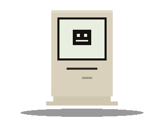

Pular para o conteúdo
Museu do
Bit
Início
Acervo
Linha do tempo
Sala multimídia
Sobre
♥
0
◐
▤
Erro 404
Sala
não encontrada
Essa página não está no acervo. Talvez o disquete tenha corrompido.
Voltar à entrada
Ir ao acervo

↑